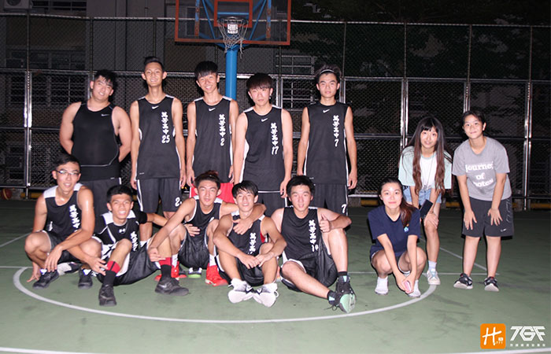

貼文時間：2017/09/21

位於台北市文山區，校園處於山坡地段，其前身為創設於1980年的萬芳國中，後因應臺灣教育改革，因而籌備、改制為高級中學，次年起開始招收高中生，同時設有國中部，奠定社區化及以完全中學發展為特色的辦學重點。而萬芳高中球隊於近年成立，性質上仍屬社團，即便校方未給予太多資源，萬芳的球員仍在這個大環境裡，尋求做夢的機會……
在學校不支持推廣籃球的情況下，球員堅持傳承著學長們對於籃球的熱愛，每一賽季的結束都是從零開始，在沒有教練的狀況下，不畏風雨和學校的阻撓，自立尋找資源，努力堆砌著自身的實力，經營著這支球隊，進而去爭取令人滿意的成績。球隊練習時間僅能利用平時放學時間，球場的燈時而開時而不開，每到冬天，日落得快，導致練習席間更大幅縮減，球員時常得摸黑練習，練習品質也是差強人意，但隊員間還是互相鼓勵，期待有朝一日打出成績被校方重視，對此他們會去參與教育盃、長耀盃、傳續盃等大型盃賽來磨練自己，也透過比賽增進視野，了解自己和其他球隊的差距，進而去追趕，隊員們也一致表示：「輸球並不可恥，重要的是不讓青春留白！」。
秉持著刻苦的精神，在半山腰的室外球場，僅有夕陽的照明，沒有球室或任何設備，師長們不斷的勸阻，依舊動搖不了萬芳球隊那顆熱愛籃球的心。大家的目標都很ㄧ致，再次進台北區八強，用ㄧ身傲骨向自己證明，籃球對我們來說不只是興趣，更與生活密不可分！